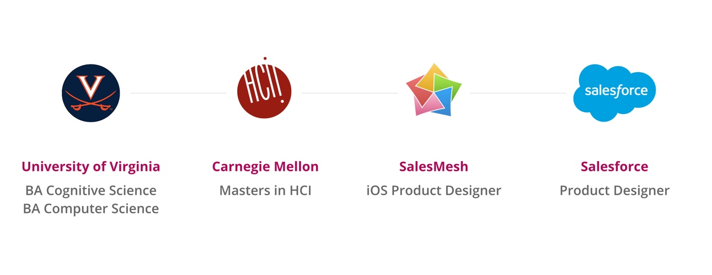
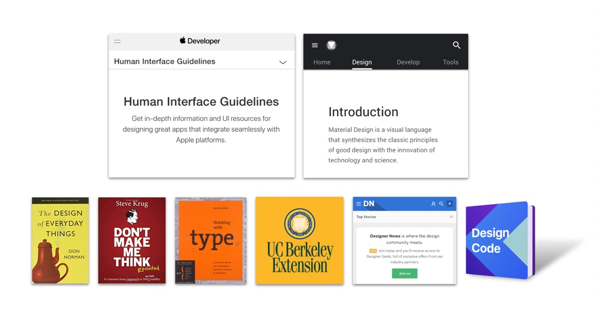

Hi! I’m Sheila. I’m a product designer based in the San Francisco bay area.
Thanks for visiting my portfolio!
I discovered product design after double-majoring in computer science and cognitive science at the University of Virginia, which led me to pursue a masters in Human-Computer Interaction from Carnegie Mellon University. I worked as a product designer on an iOS app at Salesmesh before joining Salesforce, where I work on the Field Service Lightning design team.
I learned a lot about user-centered design research methods through my experience at Carnegie Mellon University. As a mobile app designer, I try to stay up-to-date on any changes to Apple’s “Human Interface Guidelines,” and Google’s “Material Design.” I also listen to podcasts, read blogs, keep an eye on new products, and reference classic design books like Don Norman’s “Design of Everyday Things.”
I love collaborating with interdisciplinary teams, and I firmly believe in the power of combining user-centered design with a deep understanding of technical and business constraints to solve real world problems.
Please check out some of my past work!